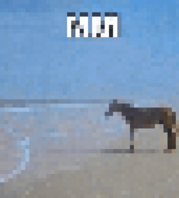
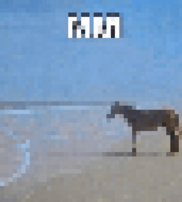

In Salim Ansari's article Best practices for form design, he articulates advice for web designers regarding form design. When designing forms, simplicity and clarity to the users should be the primary goal–forms are often tedious, so making them easy to navigate and fill out improves the overall user experience. Guiding users throught the form effectively is a key consideration. Grouping similar fields into segments gives users a clear sense of progress, and combined with a straightforward single-column layout, it keeps the flow natural and reduces confusion. Clear, visible labels along with placeholders that don’t disappear when typing are some things that help ensure users what information is needed. Ease of navigation is crucial, especially for users who prefer keyboard navigation–ensuring they are tab-friendly and displaying appropriate mobile keyboards for different input types further streamlines the process. For sensitive information, such as passwords, offering a "show password" option can help reduce mistakes and frustration. Finally, feedback plays an important role in maintaining user confidence. Immediate responses, whether they’re error messages or completion confirmations, keep users informed. It’s important to avoid features like reset buttons, which can lead to accidental data loss, potentially frustrating users. Ultimately, a well-designed form is clear, accessible, minimizes the cognitive load to ensure retention and completion.
A well designed example is the 16 Personality Test. It exemplifies tips by using a clean, single-column layout with clear progress indicators, keeping users engaged throughout the process, The questions are simple, well-spaces with immediate feedback on progress as it highlights/focuses on the question the user is currently on.
OVERLAYS
ONTIME
24-10-20
In Naema Baskanderi's article Best Practices for Modals/Overays/Dialog Windows, she writes about the UI pattern of modals and overlays--how they turned from a solution to an overused, and if done poorly, frustrating design element. While they can simplify the UI and focus the user's attention, they can also disrupt the flow of the site, especially when used in excess or poorly implemented. Some major notes: the user must be able to exit a modal without feeling trapped or frustrated which allows for them to maintain control and reduce friction from the interaction, they should know the context/reason for the modal, have labeled button/clear, should not take up the whole screen, and let the user have agency by letting (making) trigger the modal. Accessibility plays a role in ensuring modals are user-friendly, particularly with keyboard navigation and appropriate sizing. Mobile experiences suffer the most from modals because screen size and resolution constraints often make interacting with them more difficult.
VISUALS
ONTIME
24-10-22
Michael Gonchar's article 10 Intriguing Photographs to Teach Close Reading and Visual Thinking Skills delves into what can engage viewers and how that can engage them to view what they are seeing on a deeper level. The skills learned from analysis of images can be applied to other activities/engagements, transforming simple tasks into something more interactive and potentially creating an analytical process. I find idea of using images as a means to explore openness interesting; objectively there's something "true" about an image but by delving past surface level observation, it can create new narrative points. It makes the viewer slow down, look at every point, see how it makes them feel and overall what to take away from it. It really makes me want to mind-boggle someone with what I create, just make them go wow.
That being said, a website that made my brain explode (at its ingenuity and creation) is noomoagency. Even from the initial impression, there's so many subtle details and nuances in the presentation of the site-the slight hover effect on the title and the the reflectiveness of the 3D elements, making them feel like they are in the page and not slapped on. The utilization of 3D elements (something I personally want to learn how to include) feels intentional, both in the way they interact with user movements/clicks and just in animation. The website layout, while "traditional" in the flow/content, feels so unique in its presentation with its unconventional scroll effects and elements that just pop.
IMAGE
ONTIME
24-10-29
You wouldn't know when seeing the image below that the plush character in the image is dead and that this proxy of her is seeing this pony for the first time. (Also this pony was staring at this tree for 10 minutes straight, not moving--it was enough time to pull out my phone and capture the creature the same way that I saw it.) I'm planning to have this Selen plush as a central motif of my collection of images. The story comes in the edits I'm planning to have (darker, showing that a moment and memory has passed) in the sense that it's depicting a story of showing the dead, the unable, the world.
Selen: Grayson Highlands State Park, 2024
This second image is from Gabriel and a photo from his collection of images. It seems to depict a sunset with two individuals sitting as far as possible on a chair, a bench of sorts. The most interesting aspect is the separation between the two figures in the scene, the filter or editing of the image giving the impression of remission. The fact they are on a mountain gives a serene notion. The most mysterious aspect of the image is why they are there--are they fighting, are they friends, are they lovers?? This mysteriousness also makes me feel engaged with the image itself.
 
